Consider this R code for discretising a \(beta(\theta | 8, 4)\) distribution:
nIntervals <- 10
width <- 1 / nIntervals
theta <- seq(from = width / 2, to = 1 - width / 2, by = width)
approxMass <- dbeta(theta, 8, 4) * width
pTheta <- approxMass / sum(approxMass)What is the value of
sum(approxMass)? Why is it not exactly 1?
approxMass =0.9991421, it does not equal 1 because intervals are discrete, the smaller the intervals, the closer sum(approxMass) would be to 1.
Suppose we use the following code to define the grid of points instead:
theta <- seq(from = 0, to = 1, by = width)why is this appropriate?
Each interval value is discrete, so the low (0) and high (1) values would refer to invalid theta values \(\left[ 0 < \theta > 1 \right]\).
Suppose we have a coin that has a head on one side and a tail on the other. We think it might be fair, or it might be a trick coin that is heavily biased toward heads or tails. We want to express this prior belief with a single prior over \(\theta\). Therefore the prior needs to have three peaks: one near 0, one around 0.5 and one near 1. But these peaks are not just isolated spikes, because we have uncertainty about the actual value of \(\theta\)
Express your prior belief as a list of probability masses over a fairly dense grid of \(\theta\) values. Remember to set a gradual decline around the three peaks. Justify you choice. You can specify the peaks however you want, but one simple way is something like:
pTheta <- c(50:1, rep(1, 50), 1:50, 50:1, rep(1, 50), 1:50)
pTheta <- pTheta / sum(pTheta)
width <- 1 / length(pTheta)
theta <- seq(from = width / 2, to = 1 - width / 2, by = width)
plot(theta, pTheta, type = "l")Suppose you flip the coin 20 times and get 15 heads. Use the R function of Section 6.7.1 (BernGrid.R) to display the posterior beliefs. Include the R code that specified the prior values
pTheta <- c(50:1, rep(1, 50), 1:50, 50:1, rep(1, 50), 1:50)
pTheta <- pTheta / sum(pTheta)
width <- 1 / length(pTheta)
theta <- seq(from = width / 2, to = 1 - width / 2, by = width)
post <- BernGrid(theta = theta, pTheta = pTheta, Data = c(rep(1,15), rep(0,5)), plot = TRUE)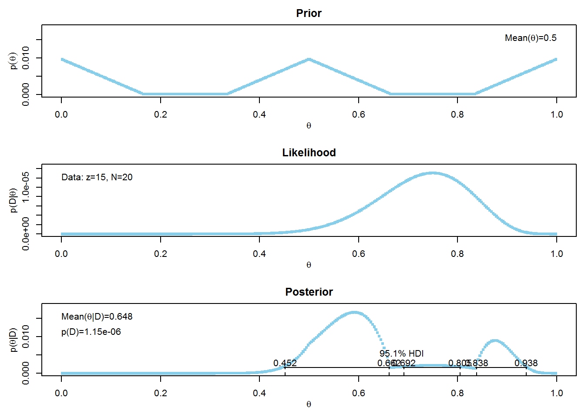
Using the same prior that was used in the previous exercise, suppose you flip the coin just 4 times and get 3 heads. Use the R function of Section 6.7.1 (BernGrid.R) to display the posterior.
posterior6.3a <- BernGrid(theta = theta, pTheta = pTheta, Data = c(rep(1,3), rep(0,1)), plot = TRUE)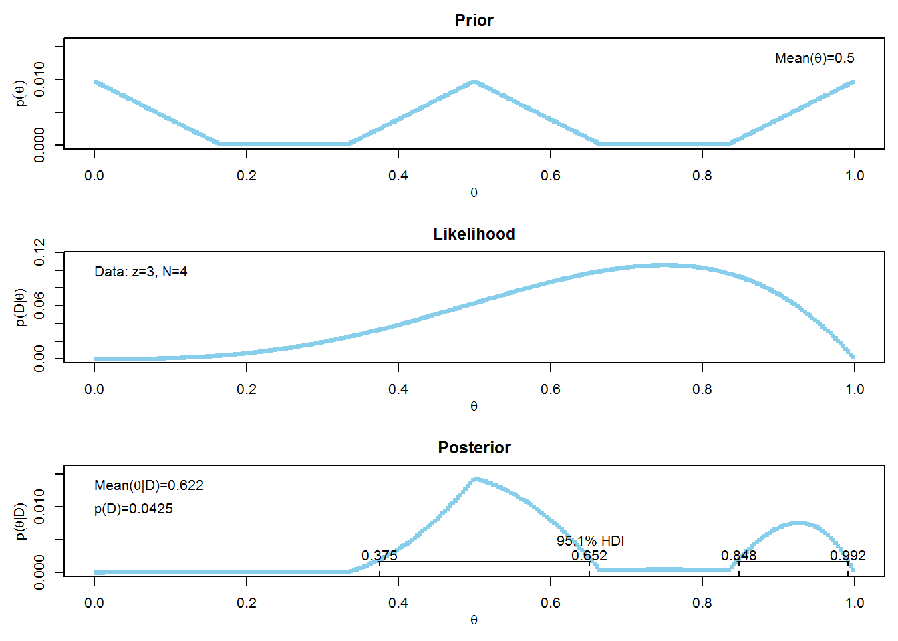
Suppose we flip the coin an additional 16 times and get 12 heads. Now what is the posterior distribution? To answer this question, use the posterior distribution that is output by the function in the previous part as the prior for this part.
posterior6.3b <- BernGrid(theta = theta, pTheta = posterior6.3a, Data = c(rep(1,12), rep(0,4)), plot = TRUE)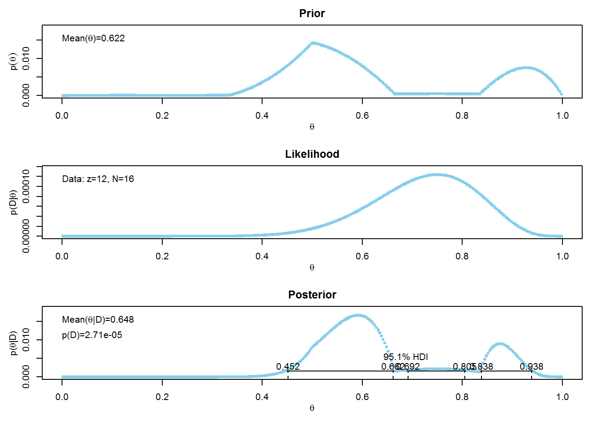
Suppose an election is approaching and you are interested in knowing whether the general population prefers candidate A or candidate B. A recently published poll in the newspaper states that of 100 randomly sampled people, 58 preferred candidate A, and the remainder preferred candidate B.
Suppose that before the newspaper poll your prior belief was a uniform distribution. What is the 95% HDI on your beliefs after learning of the newspaper poll results.
pTheta <- rep(1, 1000)
pTheta <- pTheta / sum(pTheta)
width <- 1 / length(pTheta)
theta <- seq(from = width / 2, to = 1-width / 2, by = width)
posterior6.4a <- BernGrid(theta = theta, pTheta = pTheta, Data = c(rep(1, 58), rep(0,42)))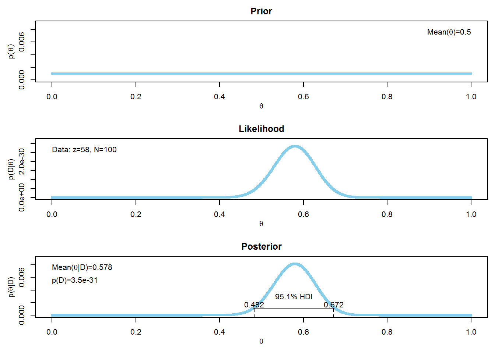
Based on the newspaper poll, is it credible to believe that the population is equally divided in its preferences for each candidate.
Yes, it is credible, as the 95% HDI includes 0.5
You want to conduct a follow up poll to narrow down your estimate of the population’s preference. In your follow up poll, you randomly sample 100 people and find that 57 prefer candidate A and the remainder prefer candidate B. Assuming that people’s opinions have not changed between polls, what is the 95% HDI on the posterior
posterior6.4c <- BernGrid(theta = theta, pTheta = posterior6.4a, Data = c(rep(1, 57), rep(0, 43)))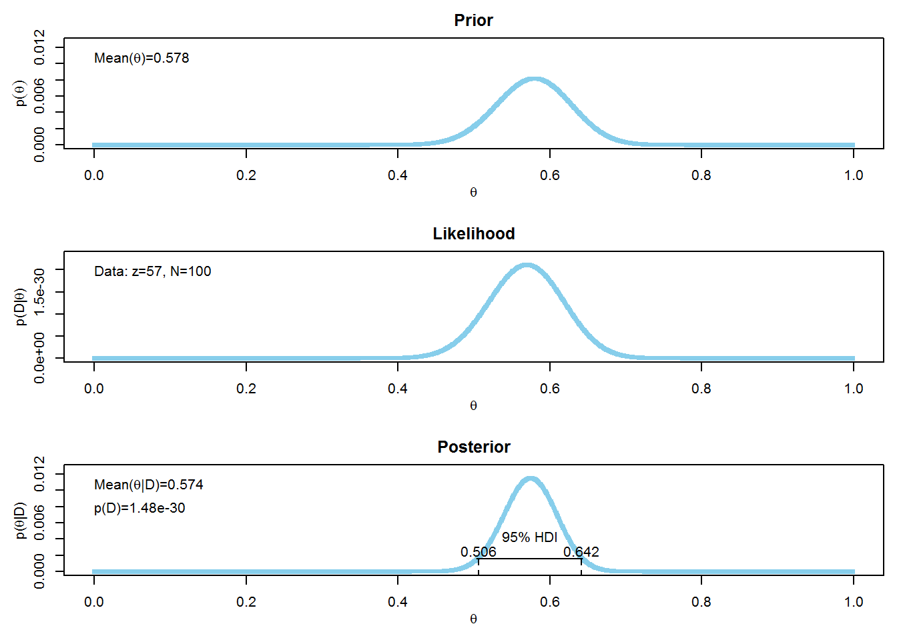
Based on your follow up poll, is it credible to believe that the population is equally divided in its preferences for each candidate.
The 95% HDI does not include 0.5, so it is not credible to believe that the population is not divided between each candidate.
Suppose that the newly hired quality control manager at the ACME Widget factory is trying to convince the CEO that the proportion of defective widgets coming off the assembly line is less than 10%. No previous data are available regarding the defect rate at the factory. The manager randomly samples 500 widgets, and she finds that 28 of them are defective…
What do you conclude about the defect rate?
There is no uniquely correct prior, we can imagine the CEO is very skeptical about quality, and believes that even a very high defect rate is possible, although not as probable as low defect rates. Therefore the prior used here is linearly decreasing across the domain
pTheta <- 1000:1
pTheta <- pTheta / sum(pTheta)
width <- 1 / length(pTheta)
theta <- seq(from = width / 2, to = 1 - width / 2, by = width)
posterior6.5a <- BernGrid(theta = theta, pTheta = pTheta, Data = c(rep(1,28), rep(0, 500-28)))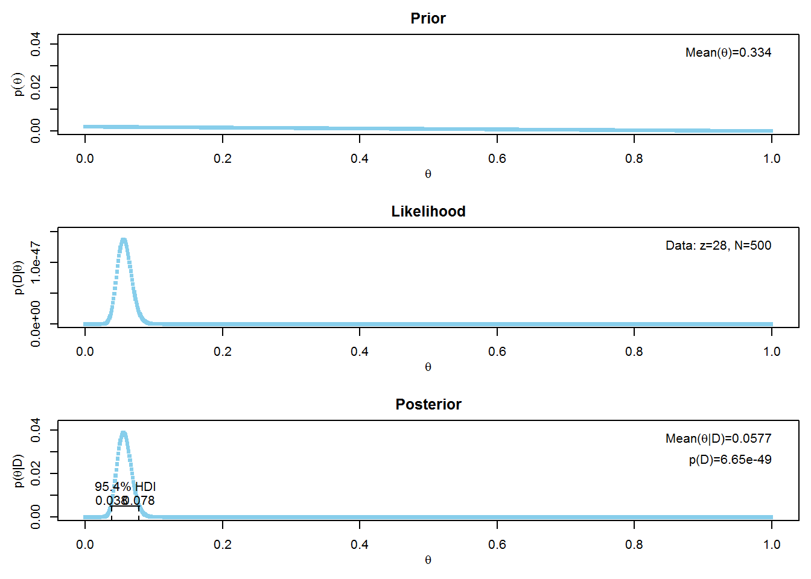
As an comparison, let’s look at a uniform prior
pTheta <- rep(1, 1000)
pTheta <- pTheta / sum(pTheta)
width <- 1 / length(pTheta)
theta <- seq(from = width / 2, to = 1 - width / 2, by = width)
posterior6.5b <- BernGrid(theta = theta, pTheta = pTheta, Data = c(rep(1, 28), rep(0, 500-28)))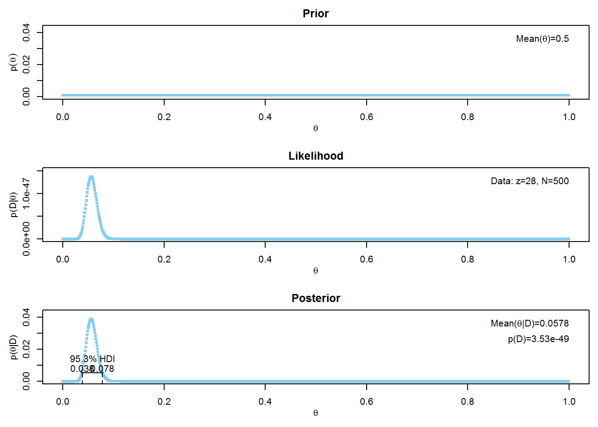
Suppose we believe that a coin is biased to come up heads, and we describe our prior belief as quadratically increasing: \(p(\theta)\) is proportional to \(\theta^2\). Suppose we flip the coin four times and observe two heads and two tails. Based on the posterior distribution, what is the predicted probability that the next flip will return a head?
binwidth <- 1 / 1000
thetagrid <- seq(from = binwidth / 2, to = 1 - binwidth / 2, by = binwidth)
relprob <- thetagrid^2
prior <- relprob / sum(relprob)
posterior6.6a <- BernGrid(theta = thetagrid, pTheta = prior, Data = c(rep(1,2), rep(0, 2)))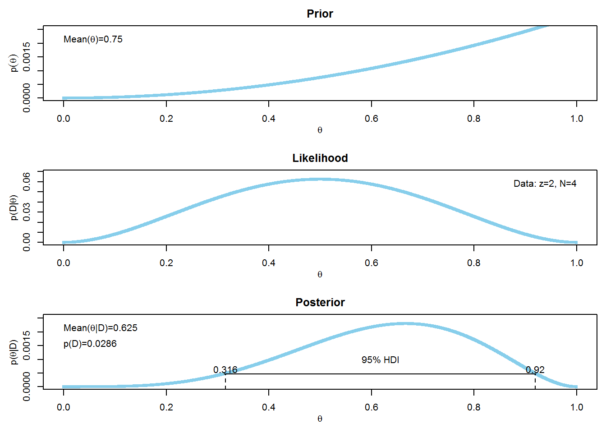
(predprob <- sum(thetagrid * posterior6.6a))## [1] 0.625Suppose we have competing beliefs about the bias of a coin: One person believes the coin is head biased, and the second person believes the coin is tail biased. To make this specific, suppose the head-biased prior is \(p(\theta | M1)\) proportional to \(\theta^2\) and the tail-based prior is \(p(\theta | M2)\) proportional to \((1 - \theta)^2\).
Suppose that we are equally willing to entertain the two models, so \(p(M1) = p(M2) = 0.5\). We flip the coin \(N = 8\) times and observe \(z = 6\) heads. What is the ration of posterior beliefs (ie Bayes Factor)?
binwidth <- 1 / 1000
thetagrid <- seq(from = binwidth / 2, to = 1 - binwidth / 2, by = binwidth)
# model 1
M1relprob <- thetagrid ^ 2
M1prior <- M1relprob / sum(M1relprob)
posterior6.71 <- BernGrid(theta = thetagrid, pTheta = M1prior, Data = c(rep(1, 6), rep(0, 2)))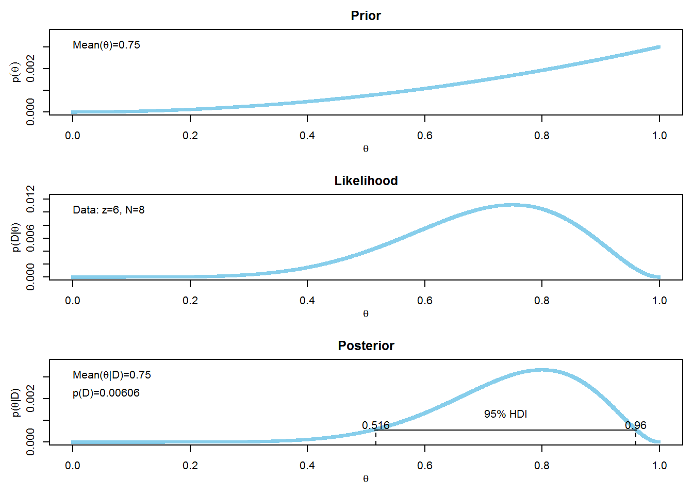
# model2
M2relprob <- (1 - thetagrid) ^ 2
M2prior <- M2relprob / sum(M2relprob)
posterior6.72 <- BernGrid(theta = thetagrid, pTheta = M2prior, Data = c(rep(1, 6), rep(0, 2)))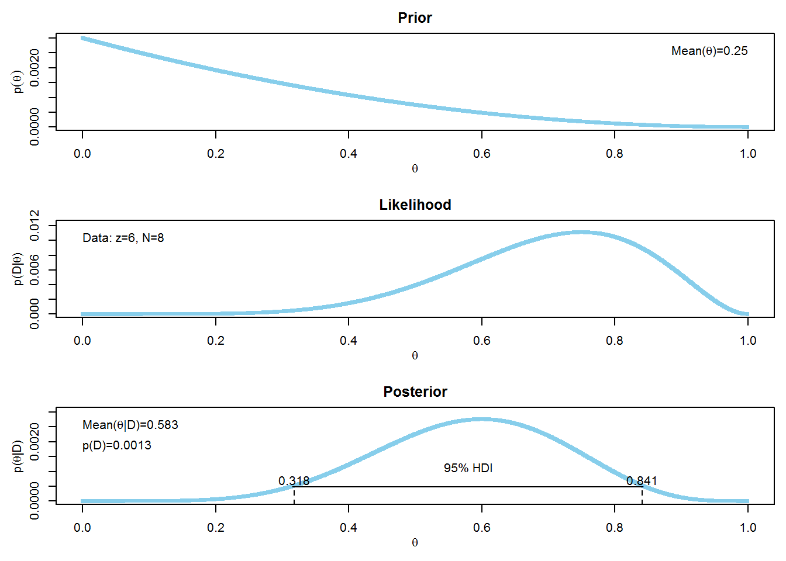
The posteriors show that \(p(D | M1) = 0.00606\) and \(p(D | M2) = 0.00130\), so the Bayes Factor is \(0.00606 / 0.00130 = 4.66\)
A pharmaceutical company claims that its new drug increases the probability that couples who take the drug will conceive a boy. The company has published no studies regarding this claim, so there is no public knowledge regarding the efficacy of the drug.
Suppose you conduct a study in which 50 couples, sampled at random from the general population, take the drug during a period of time while trying to conceive a baby. Suppose that eventually wall couples conceive; there are 30 boys and 20 girls (no multiple births).
You want to estimate the probability of conceiving a boy for couples who take the drug. What is an appropriate prior belief distribution? It cannot be the general population probability, because that is a highly peaked distribution near 0.5 that refers to non-drugged couples. Instead, the prior needs to relfect our pre-experiment uncertainty in the effect of the drug. Discuss your choice of prior with this in mind.
A skeptical prior would be to use a prior based on the general population, highly peaked around 0.5, as it wouuld require a lot of data in order for beliefs to move. However, it seems reasonable that the prior should be centered around 0.5, but not as highly peaked. A prior of \(beta(\theta | 5,5)\) is appropriate.
Using your prior from the previous part, plot the posterior and decide whether it is credible that couples who take drugs have a 50% chance of conceiving a boy.
We can use the BernBeta function from Chapter 5. The HDI in the posterior includes 0.5, so the manufacturer’s claim should not be believed.
posterior6.8 <- BernBeta(c(5,5), c(rep(1, 30), rep(0,20)))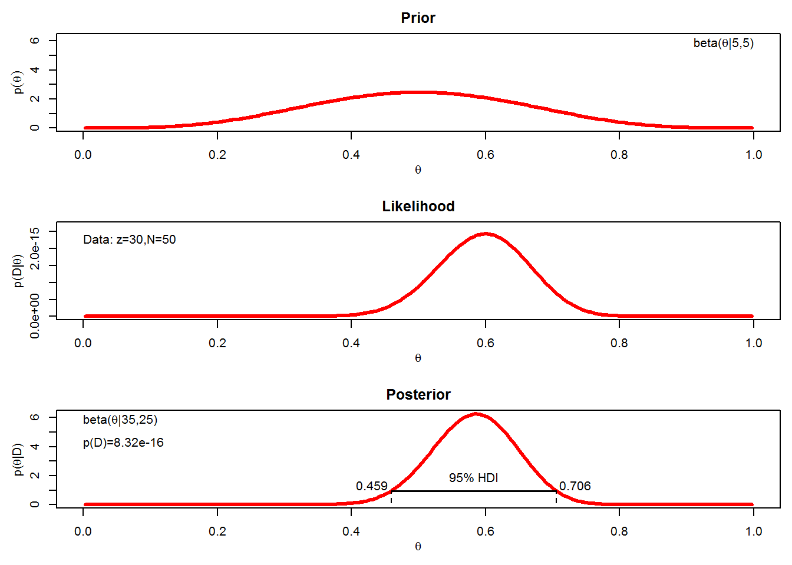
Suppose that the drug manufacturers make a strong claim that their drug sets the probability of conceiving a boy to nearly 60%, with high certainty. Suppose you represent that claim by a \(beta(\theta | 60, 40)\) prior. Compare that claim against the skeptic who says there is no effect of the drug, and the probability of conceiving a boy is represented by a \(beta(\theta | 50, 50)\) prior. What is the value of \(p(D)\) for each prior? What is the posterior belief in each claim?
posterior6.8a <- BernBeta(c(60, 40), c(rep(1, 30), rep(0, 20)))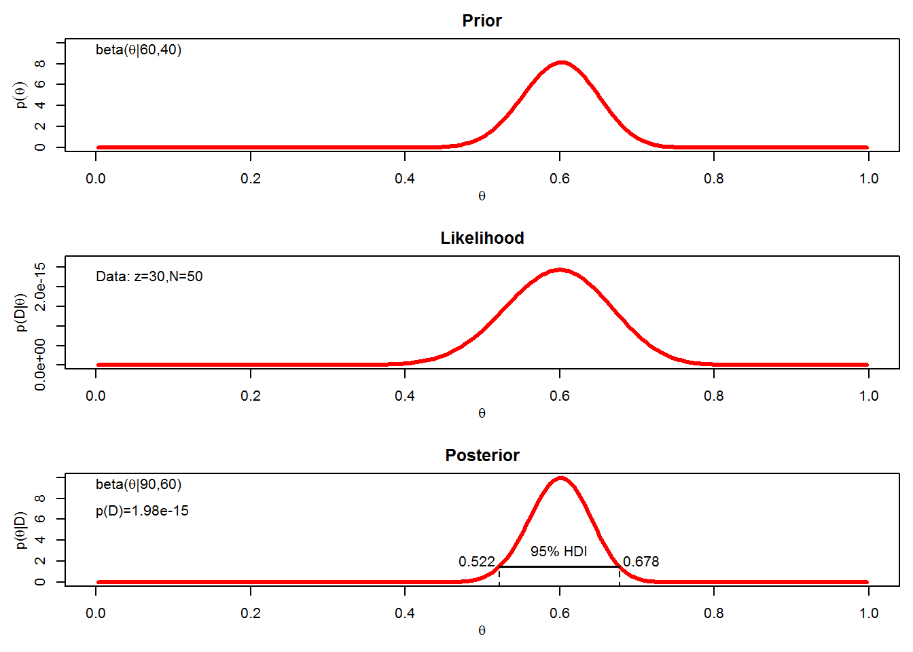
posterior6.8b <- BernBeta(c(50, 50), c(rep(1, 30), rep(0, 20)))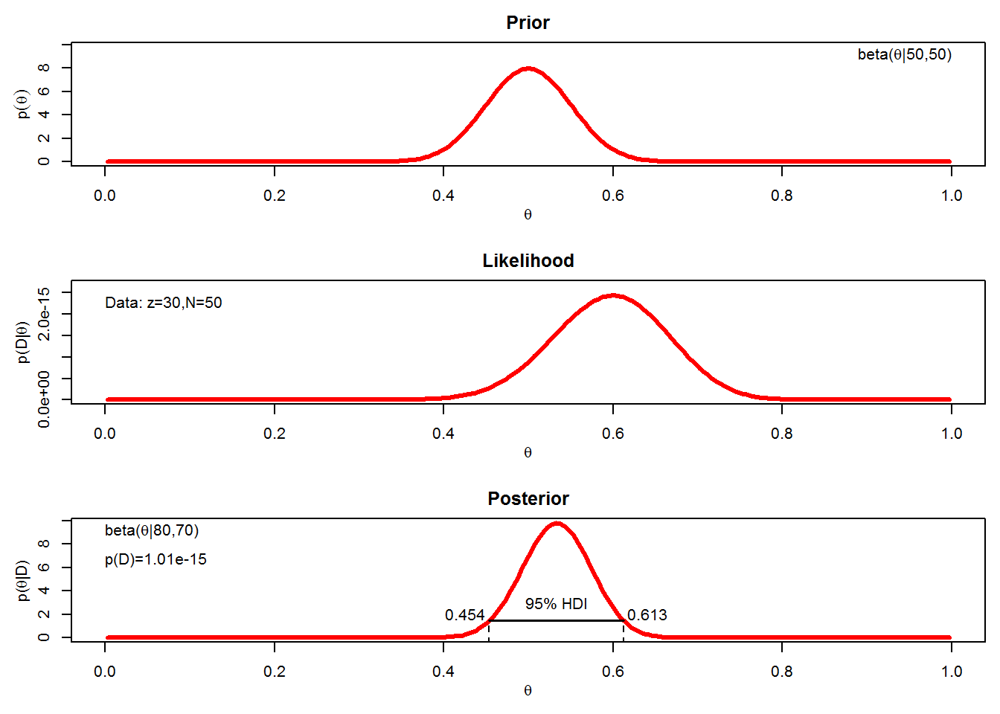
The Bayes Factor is \(1.98e-15 / 1.01e-15 = 1.96\) in favour of the 60-40 prior. This is not the posterior odds, however, because we have to factor in the prior odds of the model priors. Suppose for example, that \(p(60-40)\) prior is 0.33 and \(p(50-50)\) prior is 0.67. Then the posterior odds are:
\[\begin{align} \frac{p(60-40 prior | D)}{p(50-50 prior | D)} & = \frac{p(D | 60-40 prior)}{\frac{p(D | 50-50 prior) * p(60-40 prior)}{p(50-50 prior | D)}} \\ & = 1.96 * \frac{0.33}{0.67} \\ & = 0.97 \end{align}\]